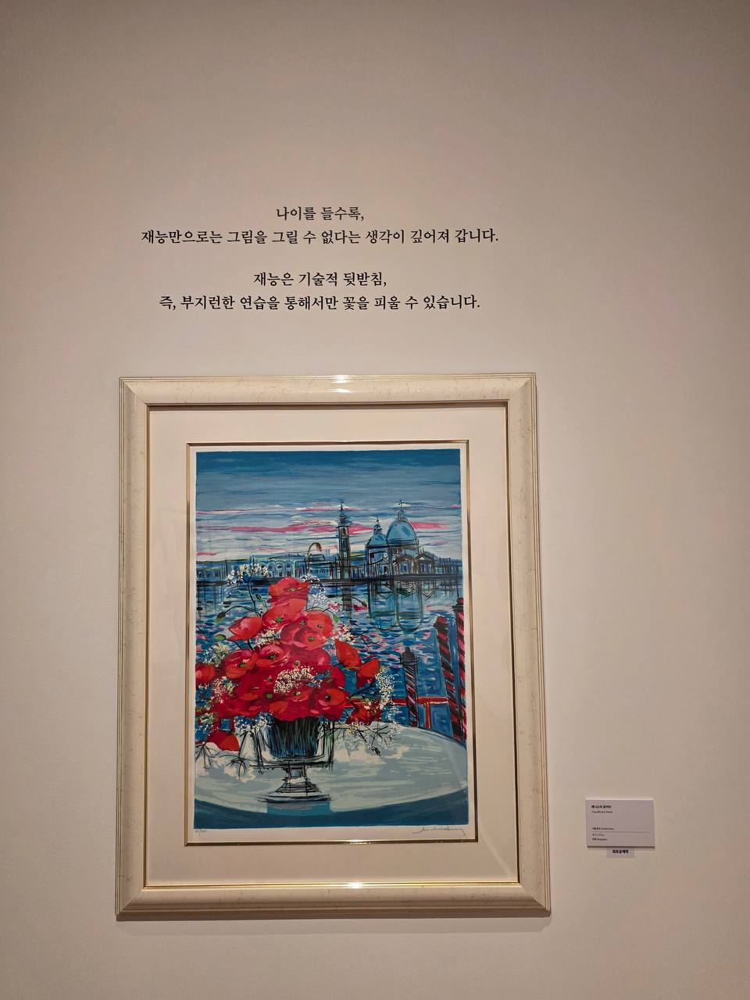
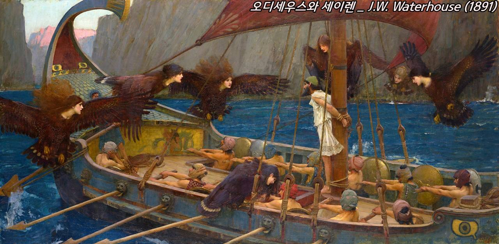
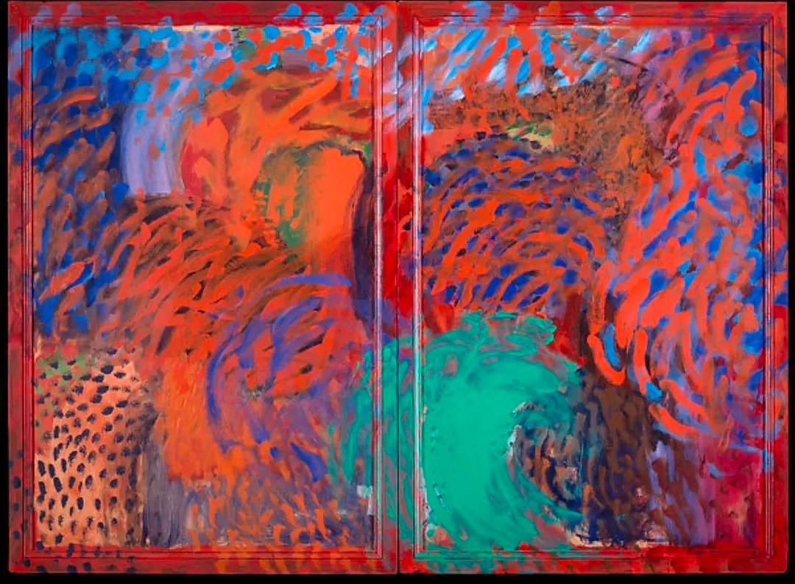

2026.09.10 · MORNING GALLERY BORIS
미셸 앙리
꽃과 도시, 풍경을 빌려 보이는 색보다 느껴지는 빛을 그린 프랑스의 컬러리스트.

2026.09.10 · MORNING GALLERY 3편
오디세이
트로이 전쟁을 마친 오디세우스의 10년 귀향길을 고대 유물과 여러 시대의 회화로 따라갑니다.

2026.09 · DANKKUM MORNING ART
하워드 호지킨
기억과 감정을 색으로 되살리고 프레임까지 회화로 확장한 영국 화가.